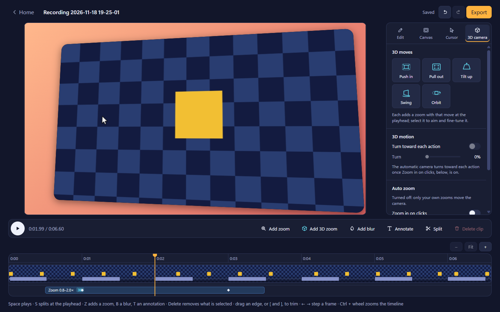
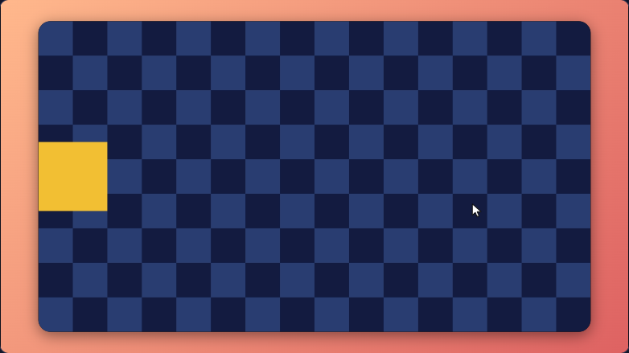
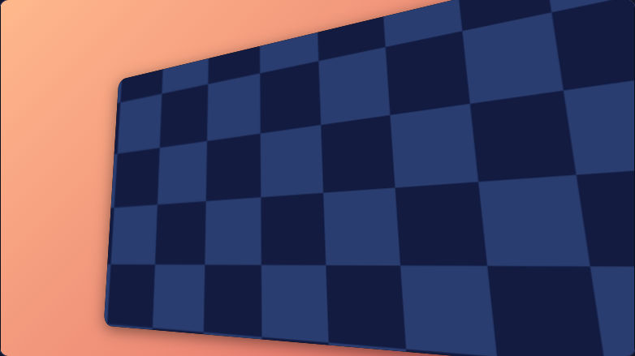
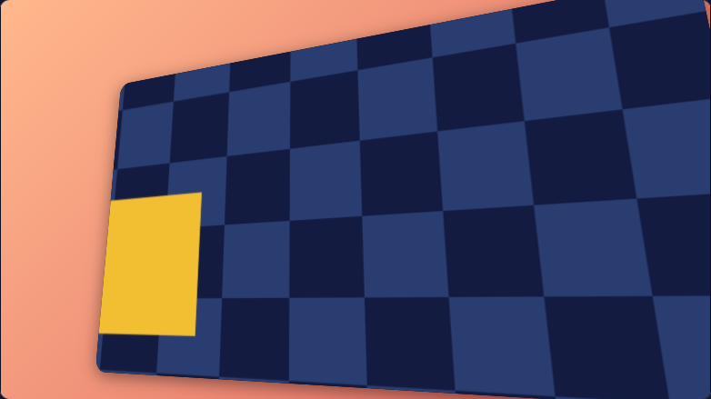
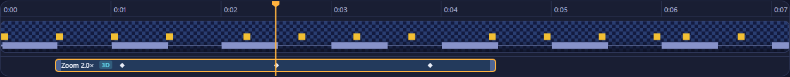
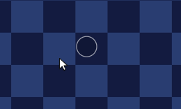
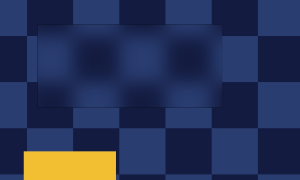

Screen recordings that look edited
usee is a free, open-source screen recorder for Windows. It zooms in where you click, smooths the cursor and frames the picture, on your computer alone.
Free and open source. Windows 10 and 11, x64.




The camera follows you
usee notes each click and each pause of the pointer, then moves the camera there, flat or turned in 3D. These three frames come from one usee recording, and every zoom stays yours to change on the timeline.
Everything the edit needs
RecordA screen, a window or an area. Stop with these keys.
SpeedA quarter speed to four times, clip by clip.
ExportMP4 up to 4K. This clip is a usee export.
Auto zoomIn on every click and every pause.

3D cameraTilt, turn and rotate, or one of five moves.

TimelineSplit, trim and undo, with each clip's frames and sound.

CursorSmooth, with an effect on every click.

AnnotationsWords, arrows, boxes, and blur for anything private.
From click to MP4
Times for a two-minute recording on a desktop PC.
Nothing leaves this computer

What it keeps, and where
Recordings go to Videos\usee; settings and logs to your app-data folder. The logs hold no pictures, sound, window titles or keystrokes.
What it never does
No account, no upload, no telemetry, no update checks. You pick the microphone for each recording, and usee forgets it.
Built in the open
git clone https://github.com/techuhat/usee.git
cd usee
npm install
npm run build:native
npm run devusee is an Electron and React app with a C++20 recorder host, which captures through Windows Graphics Capture and Media Foundation; FFmpeg encodes the export. It is MIT-licensed, and GitHub Actions builds and tests every change and every release.
Get usee free for Windows
The installer is for Windows 10 (version 2004 or later) and 11, x64. It is not signed yet, so SmartScreen asks once: choose More info, then Run anyway.
Download
It installs for your user alone, with no administrator rights. To remove it: Windows Settings, Apps, Installed apps, usee. Your recordings stay until you delete them.
Code signing policy
Free code signing provided by SignPath.io, certificate by SignPath Foundation. usee has applied to the programme; until it is accepted, releases are unsigned.
Every signed file is built by GitHub Actions from this public source, and each release is approved by hand. Committers, reviewers and approvers: techuhat. Only usee's own files are signed; ffmpeg.exe, built from FFmpeg's source by the same workflow, is not.
This program will not transfer any information to other networked systems unless specifically requested by the user or the person installing or operating it.